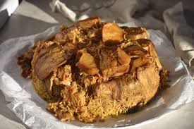

Prep and Fry the Vegetables Slice eggplant, potatoes, and cauliflower. Salt the eggplant and let it sit for 30 minutes to release moisture, then pat dry. Fry the vegetables in oil until browned and partially cooked (alternatively, roast in the oven at 400°F for 20-30 minutes for a healthier version).
Cook the Chicken Sear the chicken pieces in a large pot with oil until browned. Add the onions, bay leaves, cinnamon stick, and spices (allspice, cardamom, etc.). Cover with water, bring to a boil, and simmer for 30 to 40 minutes until tender. Remove the chicken and strain the broth, keeping it for the rice
Layer the Pot In a large, heavy-bottomed pot, drizzle a little oil at the bottom. Layer the sliced tomatoes on the bottom (this prevents burning and helps with flipping). Add the fried vegetables (potatoes, eggplant, cauliflower). Place the chicken on top of the vegetables. Add the soaked and drained rice on top, spreading it evenly
Cook the Maqluba Slowly pour the hot chicken broth over the rice until it covers the rice by about 1 inch. Bring to a boil, then reduce heat to low, cover, and cook for 30–40 minutes, or until the rice is fluffy and the liquid is absorbed.
The Flip Let the pot rest for 10-15 minutes off the heat—this helps the dish hold its shape. Place a large serving platter over the pot, and with confidence (and oven mitts), flip it over. Gently remove the pot to reveal the layered dish, garnish with nuts and parsley, and serve with yogurt or salad